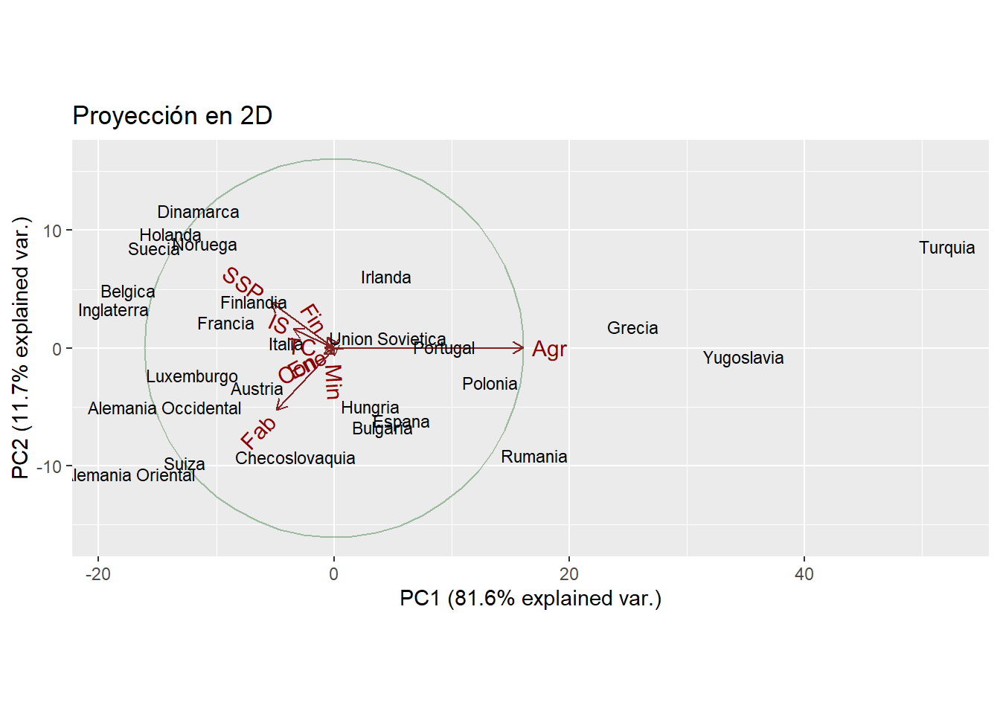

País Agr Min Fab Ene Con IS Fin SSP TC
1 Belgica 3.3 0.9 27.6 0.9 8.2 19.1 6.2 26.6 7.2
2 Dinamarca 9.2 0.1 21.8 0.6 8.3 14.6 6.5 32.2 7.1
3 Francia 10.8 0.8 27.5 0.9 8.9 16.8 6.0 22.6 5.7
4 Alemania Occidental 6.7 1.3 35.8 0.9 7.3 14.4 5.0 22.3 6.1
5 Irlanda 23.2 1.0 20.7 1.3 7.5 16.8 2.8 20.8 6.1
6 Italia 15.9 0.6 27.6 0.5 10.0 18.1 1.6 20.1 5.7
7 Luxemburgo 7.7 3.1 30.8 0.8 9.2 18.5 4.6 19.2 6.2
8 Holanda 6.3 0.1 22.5 1.0 9.9 18.0 6.8 28.5 6.8
9 Inglaterra 2.7 1.4 30.2 1.4 6.9 16.9 5.7 28.3 6.4
10 Austria 12.7 1.1 30.2 1.4 9.0 16.8 4.9 16.8 7.0
11 Finlandia 13.0 0.4 25.9 1.3 7.4 14.7 5.5 24.3 7.6
12 Grecia 41.4 0.6 17.6 0.6 8.1 11.5 2.4 11.0 6.7
13 Noruega 9.0 0.5 22.4 0.8 8.6 16.9 4.7 27.6 9.4
14 Portugal 27.8 0.3 24.5 0.6 8.4 13.3 2.7 16.7 5.7
15 Espana 22.9 0.8 28.5 0.7 11.5 9.7 8.5 11.8 5.5
16 Suecia 6.1 0.4 25.9 0.8 7.2 14.4 6.0 32.4 6.8
17 Suiza 7.7 0.2 37.8 0.8 9.5 17.5 5.3 15.4 5.7
18 Turquia 66.8 0.7 7.9 0.1 2.8 5.2 1.1 11.9 3.2
19 Bulgaria 23.6 1.9 32.3 0.6 7.9 8.0 0.7 18.2 6.7
20 Checoslovaquia 16.5 2.9 35.5 1.2 8.7 9.2 0.9 17.9 7.0
21 Alemania Oriental 4.2 2.9 41.2 1.3 7.6 11.2 1.2 22.1 8.4
22 Hungria 21.7 3.1 29.6 1.9 8.2 9.4 0.9 17.2 8.0
23 Polonia 31.1 2.5 25.7 0.9 8.4 7.5 0.9 16.1 6.9
24 Rumania 34.7 2.1 30.1 0.6 8.7 5.9 1.3 11.7 5.0
25 Union Sovietica 23.7 1.4 25.8 0.6 9.2 6.1 0.5 23.6 9.3
26 Yugoslavia 48.7 1.5 16.8 1.1 4.9 6.4 11.3 5.3 4.0Entrega 5
Este es el repositorio de GitHub en el que alojaremos todos los archivos relacionados con esta entrega.
Considera los datos “europa.dat” que están disponibles en Aula Digital. Los datos corresponden a los porcentajes de población empleados en diferentes actividades económicas en Europa para el año 1979. Las variables consideradas son:
Agricultura, Minas, Fábricas, Suministro Eléctrico, Construcción, Industrias de Servicio, Finanzas, Servicios Sociales y Personales y, Transporte y Comunicaciones.
Utiliza el método de componentes principales para reducir el número de variables, y tratar de determinar grupos de países con comportamientos semejantes en la distribución de su fuerza de trabajo. En este caso, usa la matriz de covarianza para el cálculo de las componentes principales, ya que todos los datos están medidos en la misma escala (porcentaje de la población) y por las caractersticas de los datos, no parece una buena idea considerarlos todos de igual manera.
En primer lugar procedemos a cargar nuestros datos:
A continuación se muestra el vector de medias de nuestro conjunto de datos:
Agr Min Fab Ene Con IS Fin SSP TC
1 19.13077 1.253846 27.00769 0.9076923 8.165385 12.95769 4 20.02308 6.546154Como se puede observar, el sector con mayor nivel medio de ocupación es el de la fabricación, servicios sociales y personales y agricultura. Estas tres actividades, conjuntamente, parece que abarquen más del 50% de la economía (en media) de los países europeos. Por otro lado, el sector energético, el de la minería y las finanzas son los que tienen los niveles más bajos de ocupación.
Ahora, como dice el enunciado, procedemos a hacer una análisis de componentes principales usando la matriz de covarianza. Se opta por este método porque todos los datos son porcentajes y, por tanto, están ya en una misma escala y no existe la necesidad de estandarizarlos.
Call:
princomp(x = europa[, 2:10], cor = FALSE)
Standard deviations:
Comp.1 Comp.2 Comp.3 Comp.4 Comp.5 Comp.6
17.08176356 6.48234700 3.82393204 2.32861792 1.53278255 1.00289626
Comp.7 Comp.8 Comp.9
0.63612956 0.24985891 0.04287707
9 variables and 26 observations.Estudiemos ahora qué porcentaje de la variabilidad total del Dataset viene representada por cada componente principal y, también, en qué medida contribuye cada una de las variables en las direcciones que determinan las componentes principales (porque cada CP es una combinación lineal de las variables con las que trabajamos).
Importance of components:
Comp.1 Comp.2 Comp.3 Comp.4 Comp.5
Standard deviation 17.0817636 6.4823470 3.82393204 2.32861792 1.532782553
Proportion of Variance 0.8157836 0.1174827 0.04088179 0.01516024 0.006568567
Cumulative Proportion 0.8157836 0.9332663 0.97414811 0.98930835 0.995876918
Comp.6 Comp.7 Comp.8 Comp.9
Standard deviation 1.002896265 0.63612956 0.2498589145 4.287707e-02
Proportion of Variance 0.002812041 0.00113136 0.0001745417 5.139960e-06
Cumulative Proportion 0.998688959 0.99982032 0.9999948600 1.000000e+00
Loadings:
Comp.1 Comp.2 Comp.3 Comp.4 Comp.5 Comp.6 Comp.7 Comp.8 Comp.9
Agr 0.892 0.118 0.180 0.153 0.335
Min -0.456 -0.766 0.290 0.324
Fab -0.271 -0.770 0.185 0.336 0.201 0.162 0.337
Ene -0.231 -0.909 0.340
Con -0.724 0.558 -0.194 0.325
IS -0.192 0.234 -0.580 0.608 0.266 0.104 0.337
Fin 0.130 -0.470 -0.781 0.121 0.123 0.334
SSP -0.298 0.567 0.598 0.236 0.248 0.332
TC 0.159 -0.435 -0.546 0.567 0.224 0.334
Comp.1 Comp.2 Comp.3 Comp.4 Comp.5 Comp.6 Comp.7 Comp.8 Comp.9
SS loadings 1.000 1.000 1.000 1.000 1.000 1.000 1.000 1.000 1.000
Proportion Var 0.111 0.111 0.111 0.111 0.111 0.111 0.111 0.111 0.111
Cumulative Var 0.111 0.222 0.333 0.444 0.556 0.667 0.778 0.889 1.000En principio, dado que la primera componente principal acumula la gran mayoría de la variabilidad no sería descabellado pensar en reducir el problema a una sola dimensión. No obstante, si nos fijamos en qué sectores contribuyen a ésta observamos que un número considerable de variables no se ven representadas (la función omite los valores de contribución inferiores a 0.1). Esto nos dice que varios sectores económicos (exactamente 5).
Si quisiéramos continuar con este estudio sin vernos penalizados por tomar un número excesivo de variables, es decir, habiendo reducido la dimensionalidad del problema asumiendo ciertas pérdidas de información, optaríamos por usar entre 2 y 3 componentes principales. En caso de coger 2 lo haríamos siendo conscientes de que habría algunas variables que no quedarían bien representadas, pero igualmente sí que estarían bien representados los sectores económicos más influyentes en media (agricultura, fabricación, servicios sociales e industria de servicio).
Nos extraña que la agricultura no sea la variable que tenga un mayor nivel medio de ocupación a nivel europeo pero, sin embargo, es la que tiene la mayor variabilidad dentro de los sectores económicos. Podemos verlo en el vector de varianzas muestrales de nuestro conjunto de datos.
Agr Min Fab Ene Con IS Fin SSP
1 241.6958 0.9409846 49.10874 0.1415385 2.707954 20.93294 7.8768 46.64265
TC
1 1.936185Esto nos hace pensar que pudiera haber algunos países que sean extremadamente agrícolas en comparación con el resto de países europeos. Si representamos esto en una gráfica podremos detectar posibles outliers.

Observamos que Turquía y Yugoslavia son los países más alejados del resto. Esto se debe a que tienen una gran componente agrícola en su economía. También dudamos de si incluir a Grecia en este grupo. Si nos fijamos en los datos iniciales de estos 3 países vemos ninguno de ellos baja del 40% en agricultura e incluso en Turquía sobrepasa el 65% del total de la actividad económica. Por otro lado, destacar que Grecia y Yugoslavia tienen niveles similares en su segunda actividad más preponderante, la fabricación.
Veamos ahora qué diferencias surgen si eliminamos algunos de estos países de nuestro conjunto de datos. ¿Cambiarán las componentes principales?

Loadings:
Comp.1 Comp.2 Comp.3 Comp.4 Comp.5 Comp.6 Comp.7 Comp.8 Comp.9
Agr 0.870 0.138 0.211 0.197 0.331
Min -0.457 -0.764 0.294 0.320
Fab -0.195 -0.825 0.101 0.257 0.243 0.158 0.334
Ene -0.220 -0.905 0.353
Con 0.160 -0.799 0.432 -0.188 0.331
IS -0.220 0.220 -0.611 0.552 0.299 0.116 0.332
Fin 0.179 -0.432 -0.803 0.125 0.334
SSP -0.393 0.469 0.607 0.235 0.296 0.327
TC 0.185 0.101 -0.315 -0.602 0.576 0.216 0.337
Comp.1 Comp.2 Comp.3 Comp.4 Comp.5 Comp.6 Comp.7 Comp.8 Comp.9
SS loadings 1.000 1.000 1.000 1.000 1.000 1.000 1.000 1.000 1.000
Proportion Var 0.111 0.111 0.111 0.111 0.111 0.111 0.111 0.111 0.111
Cumulative Var 0.111 0.222 0.333 0.444 0.556 0.667 0.778 0.889 1.000
Loadings:
Comp.1 Comp.2 Comp.3 Comp.4 Comp.5 Comp.6 Comp.7 Comp.8 Comp.9
Agr 0.871 0.152 0.278 0.331
Min 0.135 -0.248 -0.305 -0.780 0.311 0.324
Fab -0.136 -0.831 0.159 0.330 0.162 0.334
Ene -0.248 -0.896 0.349
Con -0.115 -0.237 -0.381 0.810 -0.136 0.326
IS -0.238 0.193 -0.690 0.511 0.192 0.109 0.332
Fin -0.112 0.112 -0.281 -0.794 0.215 -0.282 0.153 0.338
SSP -0.390 0.475 0.605 0.334 0.162 0.327
TC 0.164 -0.637 -0.271 0.567 0.215 0.339
Comp.1 Comp.2 Comp.3 Comp.4 Comp.5 Comp.6 Comp.7 Comp.8 Comp.9
SS loadings 1.000 1.000 1.000 1.000 1.000 1.000 1.000 1.000 1.000
Proportion Var 0.111 0.111 0.111 0.111 0.111 0.111 0.111 0.111 0.111
Cumulative Var 0.111 0.222 0.333 0.444 0.556 0.667 0.778 0.889 1.000
Loadings:
Comp.1 Comp.2 Comp.3 Comp.4 Comp.5 Comp.6 Comp.7 Comp.8 Comp.9
Agr 0.848 0.258 0.104 0.278 0.329
Min 0.135 -0.248 -0.500 -0.682 0.291 0.322
Fab -0.826 0.232 0.330 0.138 0.114 0.333
Ene -0.291 -0.881 0.360
Con -0.141 -0.216 -0.384 0.738 -0.348 -0.100 0.332
IS -0.298 -0.676 0.524 0.191 0.123 0.329
Fin -0.135 -0.290 -0.795 0.216 -0.242 0.116 0.170 0.334
SSP -0.414 0.476 0.586 0.334 0.167 0.327
TC 0.181 -0.635 0.607 0.260 0.331
Comp.1 Comp.2 Comp.3 Comp.4 Comp.5 Comp.6 Comp.7 Comp.8 Comp.9
SS loadings 1.000 1.000 1.000 1.000 1.000 1.000 1.000 1.000 1.000
Proportion Var 0.111 0.111 0.111 0.111 0.111 0.111 0.111 0.111 0.111
Cumulative Var 0.111 0.222 0.333 0.444 0.556 0.667 0.778 0.889 1.000Si comparamos las componentes principales de las 3 posibles elecciones de países eliminados con el modelo inicial no se observan diferencias significativas entre ellos. Los componentes principales 1 y 2 tienen pesos muy similares y tendríamos que aumentar demasiado la dimensión del problema en cualquier caso para poder abarcar bien el problema. Finalmente, optaremos por estudiar el modelo inicial, sin eliminar ningún país, para no perder información y lo haremos teniendo en cuenta las CP 1, 2 y 3.
Procedemos con el análisis dos a dos de las componentes principales:


Para poder separar mejor los países en diferentes grupos, vamos a dibujar el grafico en 3D, de las tres componentes principales.
Conclusiones, se puede observar que en el grafico hay 2 países muy alejados del resto como habíamos dicho antes. Estos son Turquia y Yugoslavia.
Ahora vamos a intentar agrupar los países en grupos. Se puede observar que los paises de pueden agrupar en 2 grandes grupos.
El primero que vamos a comentar es el grupo de Unión Soviética, Rumania, Bulgaria, Polonia, Checoslovaquia, Alemana Oriental y Hungria. Se puede observar que estos países tienen diversas cosas en común, todos estan en el este de Europa y además también estaban bajo la influencia de la Union Soviética.
Como los paises restantes cuesta encontrar una linia divisoria para separarlos, vamos a agruparlos todos en un mismo grupo y luego lo vamos a subdividir en 2 subgrupos quedado algunos países fuero de estos. El primero de estos esta formado por los países Belgica, Francia, Suiza, Finlandia, España, Irlanda, Alemania Occidental, y Austria. Y el otro subgrupo es el de Grecia, Portugal, Italia y Noruega. Para los países restabtes que estan a la misma distancia de estos dos subgrupos no los vamos a poner en ninguno de ellos.